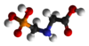

glyphosate

Definition: Glyphosate (IUPAC name: N-(phosphonomethyl)glycine) is a broad-spectrum systemic herbicide and crop desiccant. It is an organophosphorus compound, specifically a phosphonate, which acts by inhibiting the plant enzyme 5-enolpyruvylshikimate-3-phosphate synthase. It is used to kill weeds, especially annual broadleaf weeds and grasses that compete with crops. Its herbicidal effectiveness was discovered by Monsanto chemist John E. Franz in 1970. Monsanto brought it to market for agricultural use in 1974 under the trade name Roundup. Monsanto's last commercially relevant United States patent expired in 2000.
Source: Wikipedia
Wikipedia Page
Wikidata Page